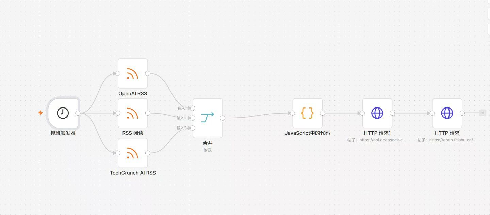
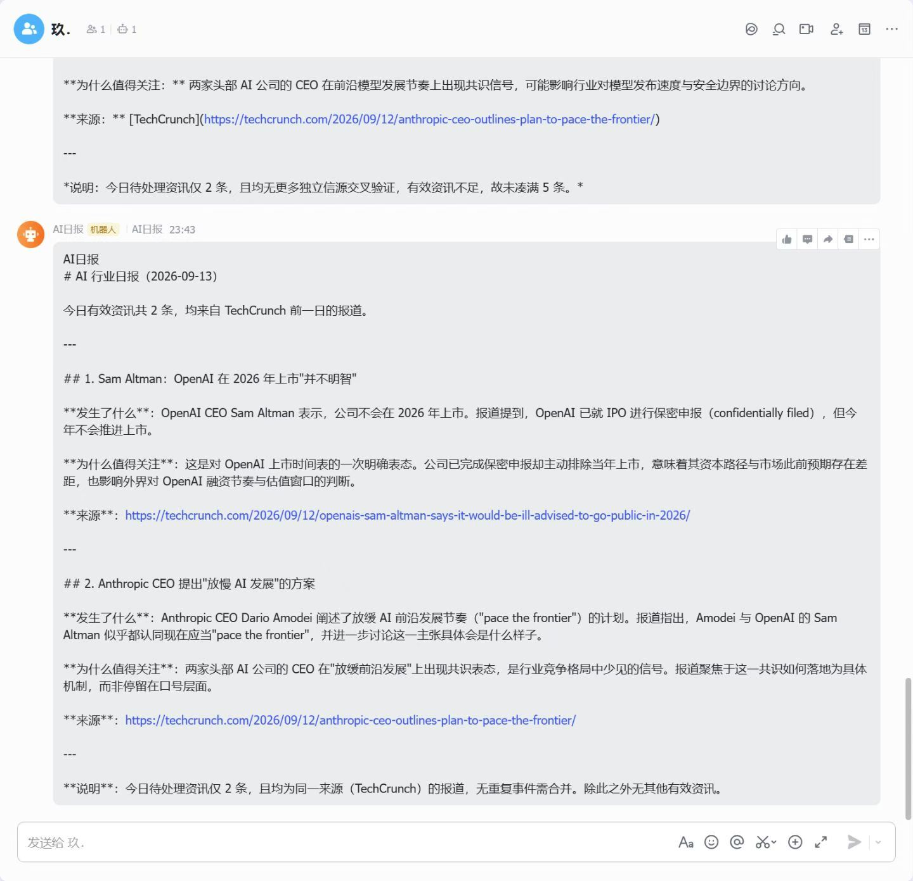

RSS · LLM · FEISHU
AI 行业日报自动化
每天定时汇总多源 AI 新闻，经过筛选、去重和模型整理后推送到飞书。

AUTOMATION FLOW项目背景
把分散的 RSS 信息整理成可读、带来源的中文日报，减少手工收集和重复阅读。
本人负责
负责流程编排、RSS 合并、时间筛选、去重、DeepSeek 接入和飞书消息推送。
已验证内容
已接入 OpenAI News、Hugging Face Blog、TechCrunch AI 三源采集，排除未来日期，最多保留 5 条，并完成真实定时发送。
运行证据
